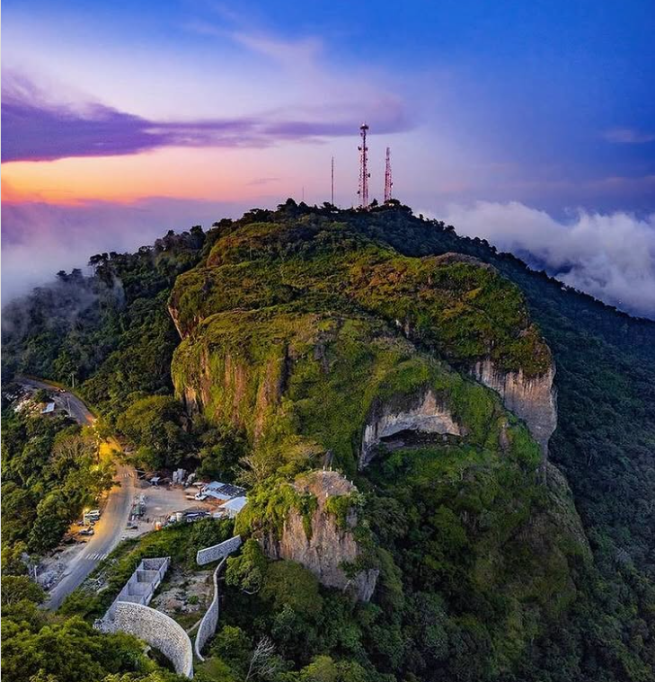
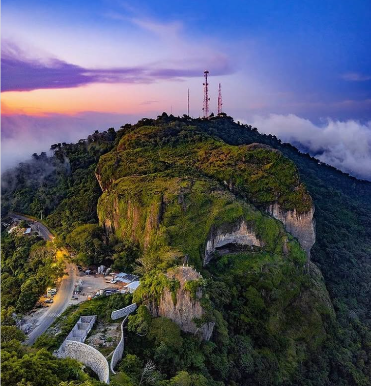
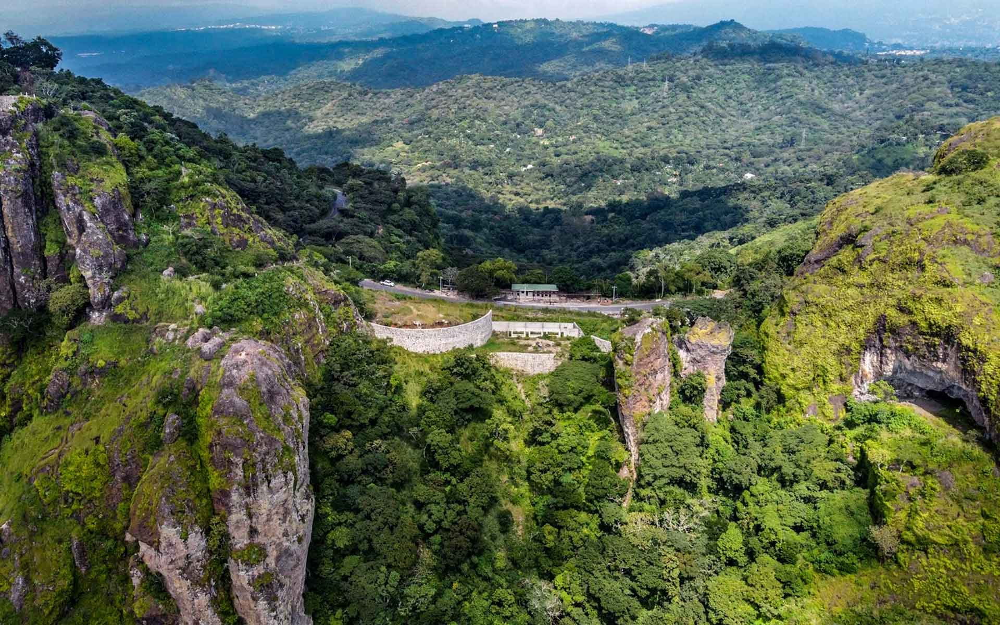
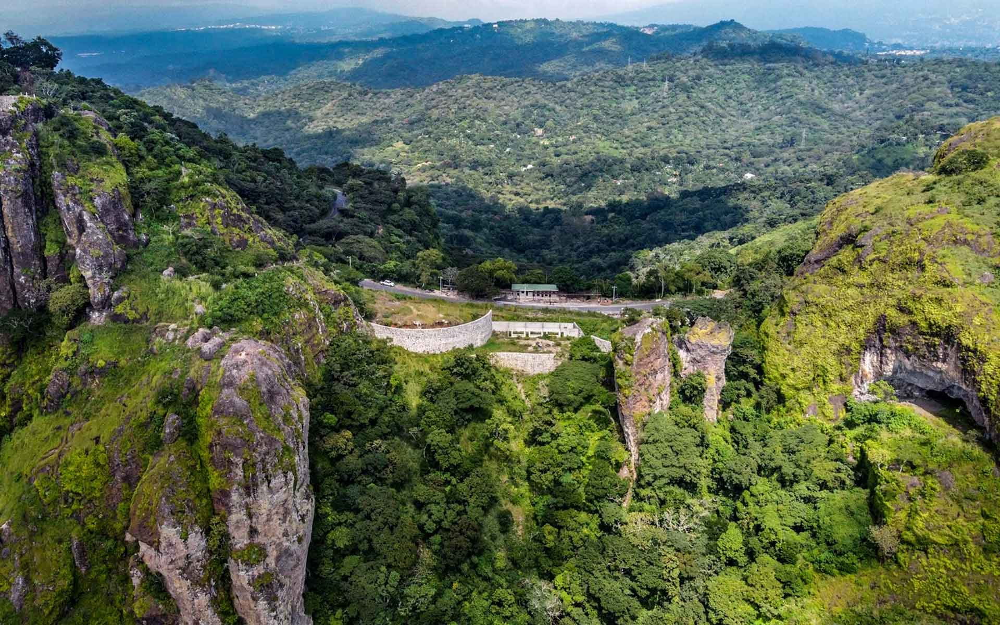

Historia y Leyenda
La Puerta del Diablo es un sitio turístico en El Salvador famoso por su impresionante vista y su historia
llena de misterio. Cuenta la leyenda que en tiempos de los colonos, la hija de uno de los terratenientes
de Los Planes de Renderos, María de La Paz, fue cortejada por el mismísimo Satanás, ya que ella era muy
hermosa y era apreciada por la servidumbre del lugar.
El maligno la mantuvo privada de libertad en unas de las
famosas cuevas que hay en el lugar. Sin embargo, nadie sabe si la encontraron con vida o si fue
rescatada por su padre. Sólo fue encontrado un escapulario que María portaba en su cuello en el día que
fue secuestrada por la entidad maligna o espectro.
Su padre, Rosendo Renderos (de ahí el nombre del
cantón donde se ubica), decidido a no dejarla en las garras de Satanás, salió en persecución de éste
cuando cayó la noche. Satanás, acosado por todos los arrendatarios del hacendado, huyó atravesando las
montañas y derribando parte de ellas con un golpe. Según la mitología debido a la forma de arco, que el
fuerte golpe talló en la cordillera, fue denominada la Puerta del Diablo.
 

 
